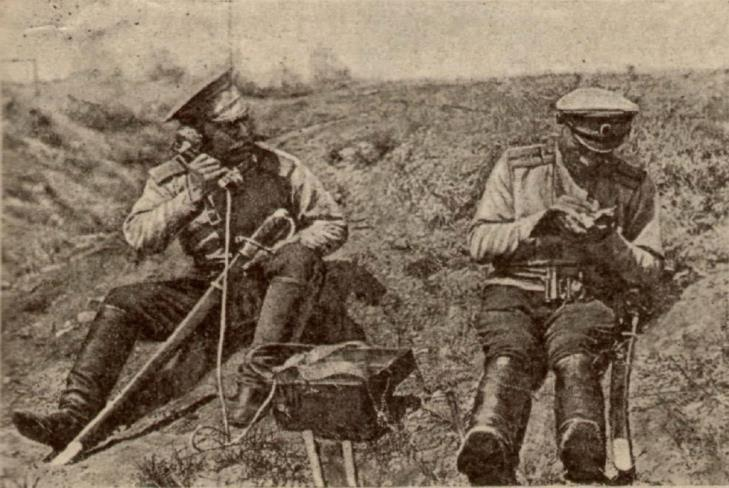
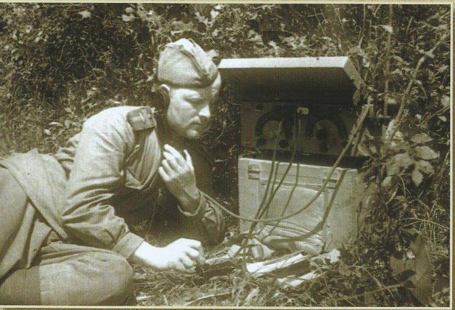
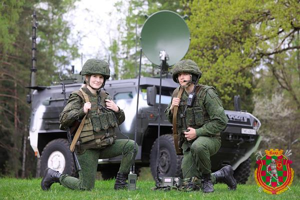
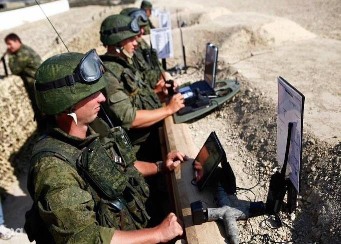
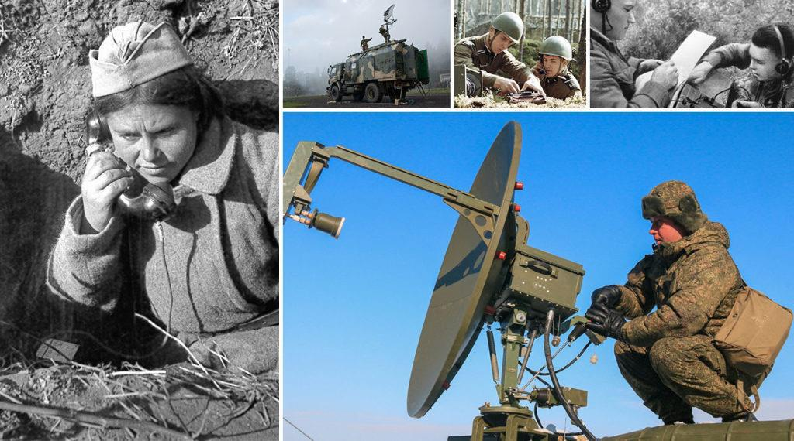

20 октября - День войск связи Вооруженных Сил Республики Беларусь
История войск началась в 1919 г., когда 20 октября приказом Реввоенсовета были сформированы управление связи Красной Армии, а также управления связи фронтов и армий, отделы связи дивизий и бригад.

Бесценный опыт части и подразделения связи Красной Армии получили в боевых действиях у озера Хасан и реки Халхин-Гол. Именно здесь, 406-й отдельный батальон связи, впервые в истории рода войск был тогда отмечен высокой советской наградой — орденом Красного Знамени.

Родина высоко оценила героический труд и боевые подвиги этого связистов на полях сражений Великой Отечественной войны. Сотни тысяч воинов войск связи были награждены орденами и медалями, 303 были удостоены звания Героя Советского Союза, 124 стали полными кавалерами ордена Славы.
Около 600 частей связи стали орденоносными, 58 — гвардейскими. 172 воинские части связи удостоились почетных наименований городов, в освобождении которых они принимали участие. В их числе 86-я Волковысская Краснознаменная, ордена Александра Невского бригада связи, 74-й отдельный Берлинский Краснознаменный ордена Александра Невского полк связи, 56-й отдельный Тильзитский ордена Красной Звезды полк связи, 60-й отдельный Барановичский Краснознамённый, ордена Александра Невского полк связи.


В наши дни военная связь является неотъемлемой составной частью управления войсками. От ее состояния зависит боевая готовность соединений и воинских частей, своевременность и эффективность применения техники и вооружения.
В составе современной белорусской армии воины - связисты с честью продолжают боевые традиции старших поколений защитников Отечества, постоянно показывая в повседневной учебно-боевой деятельности высокий профессионализм, мастерство, слаженность, организованность и крепкую воинскую дисциплину.
